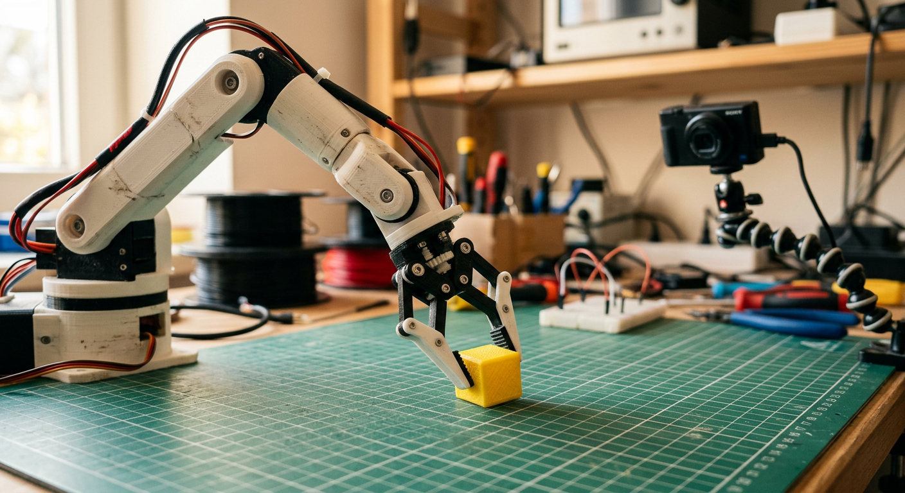
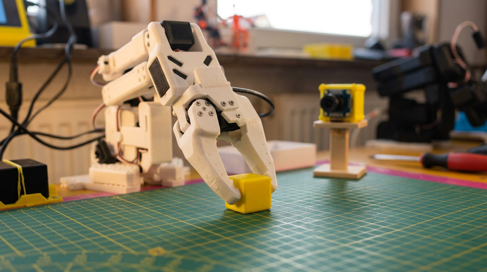

robotics
SO101, LeKiwi, XLeRobot
Coding
My Database Project
Other
MLaser
Manuscripts based on experimental work on various maker and codeing projects. Sorted by topic. Click any card to get forwarded to the manuscript.

